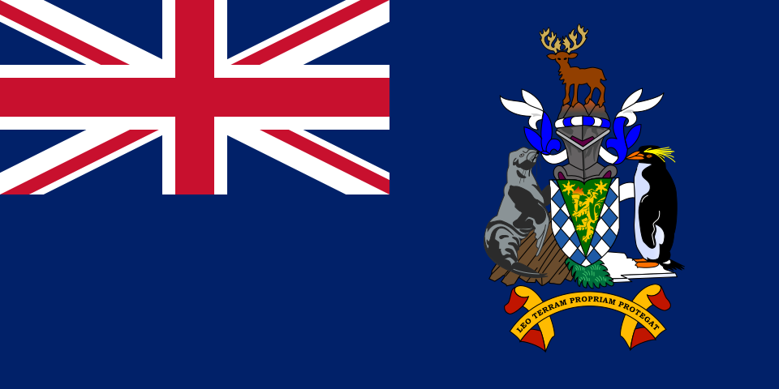

Zastavoslovje (s tujko veksilologija) je pomožna zgodovinska veda o zastavah. Izraz izhaja iz latinske besede vexillum, ki pomeni zastavo ali prapor.
Državna zastava je eden od državnih simbolov in jo zato obešamo, kadar želimo poudariti identiteto - pripadnost državi. Zastavoslovje skuša pri oblikovanju zastav uveljaviti načela enostavnosti (zastava naj bo, kolikor se da, enostavna), simbolnosti (barve, slike ali vzorci zastave naj odražajo to, kar simbolizirajo), preglednosti (uporaba treh osnovnih barv) in drugačnosti (izogibanje preveliki podobnosti z drugimi zastavami, razen ob nakazovanju povezav).
Zastavoslovci v glavnem počnejo tri stvari; analizirajo in proučujejo, oblikujejo (veksilografija) in zbirajo ter prepoznavajo.
Analiziranje in proučevanje: Zastavoslovci raziskujejo, zakaj ima določena zastava točno takšne barve in/ali simbole (na primer zakaj imajo skandinavske države križ ali zakaj se v Afriki ponavljajo panafriške barve).
Oblikovanje zastav (veksilografija): Pogosto sami rišejo nove predloge za obstoječe zastave (še posebej za mesta ali zvezne države, ki imajo slabe zastave) ali ustvarjajo zastave za izmišljene države.
Zbiranje in prepoznavanje: Zbirajo zastave, našitke ali pa se preizkušajo v hitrem prepoznavanju zastav na spletnih kvizih.
Za zastavami stoji prava znanost. Severnoameriško veksilološko društvo (NAVA) je določilo pet osnovnih načel (iz brošure Good Flag, Bad Flag, več o tem tukaj):
Obstaja ogromno število zastav, sodobnih in starinskih, ki se medsebojno zelo razlikujejo v vseh lastnostih.
Za ponazoritev teh razlik v lastnostih (in posledično v kvaliteti zastave) bom primerjal zastavo Japonske in zastavo Južne Georgije in Južnih Sandwichevih otokov, izhajal bom pa iz prej naštetih osnovnih načel NAVA.
Zastava Japonske je najlepši primer dobre zastave. Belo ozadje z velikim rdečim krogom na sredini. Drži se popolnoma vsakega načela NAVA - je enostavna, ima smiselno simboliko (rdeč krog je vzhajajoče sonce), ima dve do tri osnovne barve, je brez napisov in je prepoznavna. Boljše zastave se skoraj ne da narediti.

Južna Georgija in Južni Sandwichevi otoki (od sedaj naprej JGJS) po načelih NAVA nima dobre zastave. Če jo primerjamo z načeli NAVA: zastava ni enostavna, saj ima zelo zapleten grb na desni strani. Težava je že v dejstvu, da zastava sploh vsebuje grb, kar je še eno načelo. Simbolika je delno smiselna, saj so JGJS teritorij Združenega Kraljestva, čigar zastava je v levem zgornjem kotu. Grb nima globljega pomena, torej se tudi pri temu ne drži NAVA načel. Ima več kot tri barve zaradi grba in vsebuje napis v grbu, ki je premajhen, da bi ga lahko kdorkol prebral, če zastava plapola. In, seveda, ali je zastava prepoznavna? Ne. Sramotna zastava.